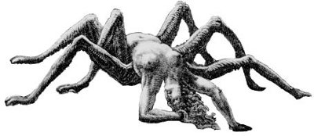
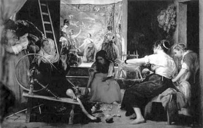

İnsanlar gibi tanrıların da, tanrıçaların da sınırsız kıskançlıkları vardı... Özellikle insanoğlunun bütün yaratıkları çok gerilerde bırakan yeteneklerine ve henüz bilincinde olmadığı içindeki saklı doruklarına karşı tanrıların duydukları öfke ve kıskançlık da, anlatılamayacak denli büyüktü. O yüzden tanrılar; insanların hadlerini bilmelerini, tanrılara özgü bilgi ve becerileri öğrenmeye kalkmamalarını isterlerdi... Haliyle onlar için çizdikleri sınırların dışına çıkmalarına izin vermezlerdi... Örneğin Atena gibi bir tanrıçanın kıskançlık ve öfkesi, tanrılara meydan okuyan isyancı bir kahramana karşı şahlanırsa, artık onun vay halineydi!..
Bununla birlikte bütün Yunan elindeki kadınlara-kızlara, o çok hoş el örgülerini, gergefte nakış işlemeyi de, "akıl ve sanat tanrıçası" Atena öğretmişti. Atinalı kadınlar ve kızlar da, ondan öğrendikleri bu sanatlarıyla her zaman övünürlerdi zaten...
İzmir dolaylarındaki Lidya krallığında da bir zamanlar, çok güzel bir kız yaşıyordu. Kumaş boyacılığı yapan İdmon'un Arahne (Arakhne) adlı bu güzeller güzeli kızının gergef işlemede, kilim örmede dillere destan bir becerisi vardı. Ünü hem bütün Anadolu'ya, hem de Yunanistan'a yayılmıştı. Bu genç kız gergefini işlerken, dağlardaki denizlerdeki perikızları bile gelip onu uzun uzun izlerlerdi. Arahne eline aldığı kaba yünleri harmanlar, onları eğirir büker, bulut gibi yumuşacık yumaklara dönüştürüverirdi. Bu işleri yaparken onu hayran hayran izleyen perikızları; bunca güzel örgü örmesini, nakış yapmasını nereden öğrendiğini sorarlardı hep. O da kimseden öğrenmediğini, ama kendi kendini yetiştirdiğini söylerdi biraz da kurularak. Perikızları da buna inanmaz görünüp, "Yok canım, bütün bunları sen tanrıça Atena'dan öğrendin!" diye onu kışkırtıp konuşturmaya çalışırlardı. O da gerçekten kendi öğrendiği bir sanatın, bir tanrıçaya maledilmesini onuruna yediremezdi...

Örümceğe dönüşen güzel Arahne
Gene perikızları, bu sanatı tanrıça Atena'dan öğrenip öğrenmediğini sordukları bir gün öfkelenip kendini tutamayan Arahne; "Ne Atena'sı matenası canım! Bu sanatı ben kendi kendime öğrendim! İsterse onunla teke tek bu konuda yarışa bile girerim!.." diye gürleyip tanrıçaya meydan okudu. Perikızları bu sözü yemediler içmediler, aynı gün Atena'nın kulağına yetiştirdiler! Tanrıça Atena da haliyle bir ölümlü kızın böylesi bir başkaldırısına çok öfkelendi... Hemen bir kocakarı kılığına girip doğruca Arahne'nin evinde aldı soluğu! Arahne büyük bir konukseverlikle yaşlı kadın kılığındaki tanrıçayı buyur etti evine. Biraz hoşbeşten sonra; "Bak kızım," diye ona öğütler vermeye başladı yaşlı kadın. "Ben yaşlı ama çok deneyimli bir kadınım. Sen de sanatında çok ilerlemiş, becerikli güzel bir kızsın. Herkesten, hatta Yunan elindeki kızlardan da üstün olabilirsin. Ama bir tanrıçayla boy ölçüşemezsin! Sen geçen gün perikızlarına söylediklerin için tanrıça Atena'dan özür dile." Kız da, "Ben havadan, rastgele konuşmadım ki!.. 'İsterse Atena gelsin, onunla yarışırım,' dedim. Ne var bu sözümde?" diye yanıt verdi.
Haliyle isyancı toy Arahne'nin yanıtına büsbütün öfkelenen kocakarı kılığındaki Atena, kendi tanrıça kimliğini açıklayıverdi! Ve bir kumaş üstünde nakış yapma yarışı önerdi... Yarışmayı Arahne'nin büyük bir sevinçle kabul etmesi üzerine her ikisi de aygıtlarının başına geçti. Atena, bulutların üstündeki Olimpos Dağı'nda oturan tanrı ve tanrıçaların bolluk ve şehvet içindeki kaygısız yaşamlarından kesitler ördü kumaşın üstüne... Zaten tanrılar için hüzün, ölüm ya da insani acılar söz konusu olmadığından, onlar kendi alemlerinde, hep böyle şen şakrak, insanların çileli dünyasından uzak yaşarlardı... İşte bu yaşamlardan birkaç sahne ördü tanrıça Atena. Sonra da kumaşın bir köşesine; Baştanrı Zeus'un elindeki yıldırımlar saçan aygıtıyla, tanrıların çizdiği sınırların dışına çıkmaya kalkanları cezalandırırken gösteren bol renkli bir sahne daha nakışladı iğnesiyle...
Lidyalı güzel Arahne de, insanların acılarını ve sorunlarını umursamadan tanrıların yaşadıkları aşk serüvenleriyle ilgili birkaç kesit nakışladı elindeki kumaşın üstüne... Örneğin bunlardan biri, Baştanrı Zeus'un beyaz bir boğa kılığına girip kandırdığı sarışın Evropa'yı kaçırmasını dillendiriyordu. Bir başka kumaşın üst köşesine de, tanrıların ülkesi Olimpos'un tersine; tarlalarında, işliklerinde kavgasız dövüşsüz çalışıp üreten ve ürettiklerini kardeşçe bölüşen mutlu insanların dünyasını nakışladı... Kumaşın alt köşesine de iri iri salkımlarla yüklü ve köylülerin ortak dikip yetiştirdikleri, ürünlerini birlikte topladıkları kocaman bir bağ yerleştirdi. Kara kara üzüm salkımları bile açık seçik görülüyordu kumaşın üstünde. Gümüş bir çitle çevrili bu bağın ortasında da tek bir yol vardı ta köye dek uzanan... Köyün genç kızları ve delikanlıları; bağbozumu başladığında bu yoldan geçerek bağa geliyorlar ve topladıkları bal gibi üzümleri bölüşmek üzere köy meydanına sepet sepet omuzlarında taşıyorlardı. Ve omuzlarındaki üzüm dolu sepetlerle yüklü bu şen şakrak gençler, habire şarkılar söylüyordu... Bu şarkılarda savaşın ve sömürünün değil, sevginin egemen olduğu bir dünyada yaşamın çok güzel olacağını vurguluyorlardı... Onların ortalarında da bir çocuk, elindeki sazla ve ince sesiyle arada bir türkü tutturuyor; büyüyünce yaşayacağı mutlu yıllarını dillendiriyordu. Omuzları üzüm sepetli genç kızlar çocuğun türküsü bitince, birlikte üretip birlikte hasat etmenin mutluluğunu dillendiren yeni bir ezgiye başlıyorlardı... Sepetlerini meydana boşalttıktan sonra da kızlı erkekli bu gençler, el ele tutuşup oyunlar oynuyor, ayaklarını yerlere vura vura ıslıklar çalıyorlardı...
Güzel Arahne'nin kumaşına bir göz atan tanrıça, onun işlemelerine ve anlatmak istediği dünyanın güzelliğine hayran kaldı... Bu dünya, Tanrılar Ülkesi Olimpos'tan da, Hades'in Yeraltı Ülkesi'nden de güzeldi. Çünkü onun desenlerinde yer alan dünyada, insanların aşka ve dostluğa dayalı egemenliği vardı... Kısacası Arahne'nin nakışının, kendisininkinden kat kat üstün olduğunu gözlemledi. Büyük bir kıskançlığa kapılan tanrıça Atena, bir ölümlünün işlediği gergeften bile, yukarıdaki tanrıların işlerine karışmış olmasının verdiği öfkeyle genç kıza saldırdı. Gergefini kafasına çarptı; bir güzel patakladı onu!.. Bu hakarete çok içerleyen Anadolu güzeli Arahne de gidip yan odadaki tavana asmak istedi kendini!.. Ama öfkesi hemen yatışan ve bu güzeller güzeli toy kızın ölmesini istemeyen tanrıça Atena, onu bir örümceğe dönüştürüverdi hemen!..
Artık Arahne o günden sonra ya bir tavanda ya da bir köşede, bu kez bir örümcek olarak gene de nakışlarını işlemeyi hep sürdürdü...
O yüzden "Arahne" adı artık Batı dillerinde ve haliyle Grekçede de, "örümcek" anlamına gelecekti...

Arahne